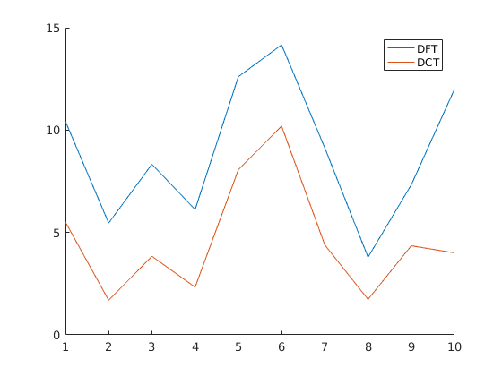
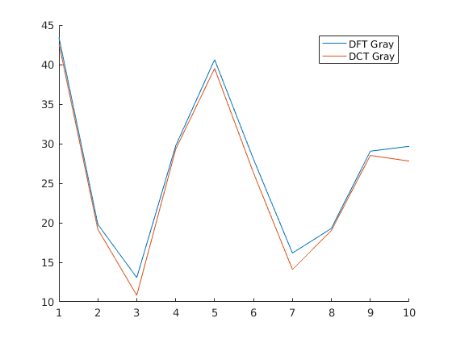

Contents
- Experimenting to test the hypothesis that DCT provides better compression than DFT
- Reading a colour image and making a grayscale copy
- Making the mask
- Considering R component of RGB image
- Considering G component of RGB image
- Considering B component of RGB image
- Considering Grayscale image
- Concatenating R,G,B values into one single image
- Finding RSME in RGB image
- Finding RSME in Grayscale image
- Plotting Error for each image for RGB versions
- Plotting Error for each image for Grayscale versions
Experimenting to test the hypothesis that DCT provides better compression than DFT
Better implying lesser error for same mask
function [] = q6()
DCT = create_mat_dct();
errorDFT = ones(10, 1);
errorDCT = errorDFT;
errorDFTGray = errorDFT;
errorDCTGray = errorDFT;
for test = 1:10
Reading a colour image and making a grayscale copy
image = imread(char(strcat(num2str(test), '.jpeg')));
image2 = rgb2gray(image);
[x, y, z] = size(image);
DCTFinalR = ones(x, y);
DCTFinalG = ones(x, y);
DCTFinalB = ones(x, y);
DFTFinalR = ones(x, y);
DFTFinalG = ones(x, y);
DFTFinalB = ones(x, y);
DFTFinalGray = ones(x, y);
DCTFinalGray = ones(x, y);
window = zeros(8, 8);
Making the mask
for i = 1:8 for j = 1:8-i+1 window(i, j) = 1; end end for i = 1:8:x-7 for j = 1:8:y-7
Considering R component of RGB image
subPart = image(i:i+7, j:j+7, 1);
DCTFinalR(i:i+7, j:j+7) = myIDCT(myDCT(subPart, DCT).*window, DCT);
DFTFinalR(i:i+7, j:j+7) = abs(ifft2(fft2(subPart).*window));
Considering G component of RGB image
subPart = image(i:i+7, j:j+7, 2);
DCTFinalG(i:i+7, j:j+7) = myIDCT(myDCT(subPart, DCT).*window, DCT);
DFTFinalG(i:i+7, j:j+7) = abs(ifft2(fft2(subPart).*window));
Considering B component of RGB image
subPart = image(i:i+7, j:j+7, 3);
DCTFinalB(i:i+7, j:j+7) = myIDCT(myDCT(subPart, DCT).*window, DCT);
DFTFinalB(i:i+7, j:j+7) = abs(ifft2(fft2(subPart).*window));
Considering Grayscale image
subPart = image2(i:i+7, j:j+7);
DCTFinalGray(i:i+7, j:j+7) = myIDCT(myDCT(subPart, DCT).*window, DCT);
DFTFinalGray(i:i+7, j:j+7) = abs(ifft2(fft2(subPart).*window));
end end
Concatenating R,G,B values into one single image
DFTFinal = cat(3, DFTFinalR, DFTFinalG, DFTFinalB);
DCTFinal = cat(3, DCTFinalR, DCTFinalG, DCTFinalB);
Finding RSME in RGB image
errorDFT(test) = RMSE(image, uint8(DFTFinal));
errorDCT(test) = RMSE(image, uint8(DCTFinal));
Finding RSME in Grayscale image
errorDFTGray(test) = RMSE(image, uint8(DFTFinalGray));
errorDCTGray(test) = RMSE(image, uint8(DCTFinalGray));
end
Plotting Error for each image for RGB versions
figure();
hold on;
plot(errorDFT);
plot(errorDCT);
legend('DFT', 'DCT');
hold off;
 Plotting Error for each image for Grayscale versions
figure();
hold on;
plot(errorDFTGray);
plot(errorDCTGray);
legend('DFT Gray', 'DCT Gray');
hold off;
 end